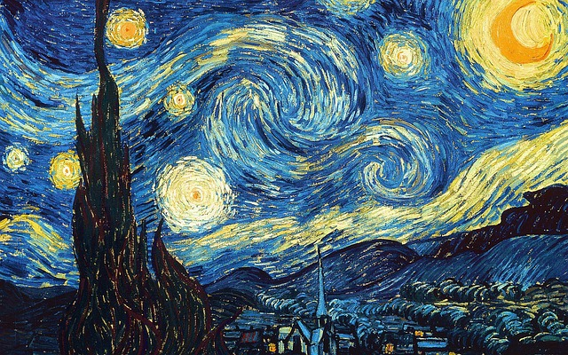

If you love this city click on the heart!
Discover Amsterdam
City Canals
Amsterdam is famous for its picturesque canal system and historic houses lining the waterways.

Van Gogh Museum
Dedicated to the works of Vincent van Gogh, featuring the largest collection of his paintings and drawings.
Historic Windmills
The city also has windmill-themed museums, where visitors can learn about the historical importance of these iconic structures.
Flower Market
Bloemenmarkt is a floating flower market where visitors can admire and purchase a wide variety of tulips and other flowers.